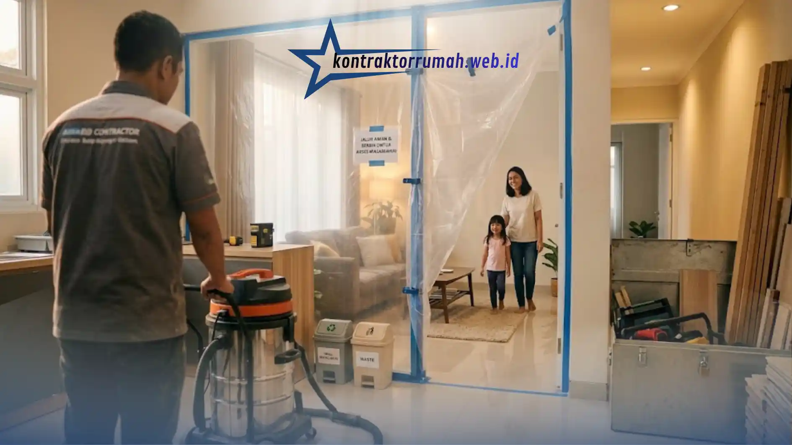

Renovasi rumah sering kali menjadi momok yang menakutkan. Bayangan akan debu yang beterbangan, suara bising bor, hingga perabotan yang berantakan membuat banyak orang memilih untuk menyewa rumah sementara. Padahal, pindah hunian berarti ada biaya ekstra yang harus dikeluarkan, mulai dari sewa tempat, biaya pindahan, hingga potensi kerusakan barang selama proses angkut.
Poin Penting
- Terapkan sistem zonasi: kerjakan satu ruangan dalam satu waktu agar rumah tetap fungsional.
- Isolasi area kerja dengan plastik tebal & exhaust fan agar debu tidak menyebar ke ruang keluarga.
- Sepakati jam kerja tukang (contoh 08.00-16.00) beserta jeda istirahat siang untuk kurangi bising.
- Batasi akses ke area kerja & bersihkan puing setiap hari demi keamanan penghuni rumah.
- Renovasi tanpa pindah hunian menghemat biaya sewa tempat, pindahan, dan risiko kerusakan barang.
Kabar baiknya, Anda tetap bisa tinggal di rumah selama proses perombakan berlangsung. Kuncinya ada pada strategi dan komunikasi yang baik dengan pihak pemborong. Berikut adalah langkah efektif merenovasi rumah tanpa harus angkat koper.
Terapkan Sistem Zonasi Ruangan
Jangan membongkar seluruh rumah secara bersamaan. Strategi ini adalah fondasi utama agar rumah tetap layak huni selama proyek berjalan.
Kerjakan Satu Ruangan dalam Satu Waktu
Mintalah kontraktor untuk mengerjakan ruangan satu per satu, misalnya menyelesaikan area dapur terlebih dahulu sebelum beralih ke kamar mandi. Dengan begitu, Anda tetap memiliki area fungsional untuk memasak, mandi, dan beristirahat selagi ruangan lain sedang dikerjakan.
Susun Urutan Prioritas Bersama Kontraktor
Diskusikan urutan pengerjaan berdasarkan ruangan mana yang paling sering digunakan keluarga. Ruang yang jarang dipakai, seperti gudang atau kamar tamu, bisa dikerjakan lebih dulu sebagai "ruang transit" sementara untuk menyimpan perabotan dari ruangan lain yang sedang direnovasi.
Isolasi Area Kerja dari Debu
Debu adalah musuh utama saat renovasi, bukan hanya mengganggu kenyamanan, tetapi juga berisiko bagi kesehatan pernapasan penghuni rumah, terutama anak-anak dan lansia.
Sekat Area Kerja dengan Plastik Tebal
Gunakan plastik tebal atau terpal untuk menutup rapat area yang sedang dikerjakan, termasuk celah pintu dan ventilasi yang menghubungkan ke ruangan lain. Rekatkan dengan lakban khusus agar tidak mudah lepas selama proyek berlangsung.

Menyekat area kerja dengan plastik tebal membantu menahan debu agar tidak menyebar ke ruangan lain yang masih dihuni.
Manfaatkan Exhaust Fan Sementara
Pasang exhaust fan sementara menghadap ke luar jendela agar sisa debu material langsung terbuang ke luar rumah, bukan masuk ke ruang keluarga. Cara ini juga membantu mengurangi bau cat atau bahan kimia bangunan yang menyengat.
Buat Kesepakatan Jadwal Kerja
Suara bising tidak bisa dihindari sepenuhnya saat renovasi, tetapi dampaknya terhadap keseharian keluarga bisa dikendalikan lewat kesepakatan yang jelas di awal.
Tentukan Jam Kerja Bersama Tukang
Sepakati jam kerja dengan tukang, misalnya mulai pukul 08.00 hingga 16.00. Pastikan pekerjaan yang menimbulkan suara keras, seperti membobok dinding atau memotong keramik, hanya dilakukan di siang hari saat anggota keluarga sedang beraktivitas di luar atau bekerja.
Beri Toleransi Waktu Istirahat
Sisipkan jeda istirahat siang di jam kerja agar suara bising tidak berlangsung terus-menerus sepanjang hari, terutama jika ada anggota keluarga yang bekerja dari rumah atau balita yang perlu tidur siang.
Fokus pada Keamanan Jalur Lalu Lalang
Keselamatan penghuni rumah, terutama anak kecil dan hewan peliharaan, harus menjadi prioritas selama masa renovasi berlangsung.
Batasi Akses ke Area Kerja
Pastikan area kerja selalu dikunci atau dibatasi barikade setelah jam kerja tukang selesai. Beri tanda atau garis pembatas yang jelas agar tidak ada anggota keluarga yang secara tidak sengaja masuk ke zona berbahaya.
Bersihkan Puing Setiap Hari
Bersihkan paku, sisa kabel, dan puing-puing setiap sore sebelum tukang pulang, agar rumah tetap aman dilewati pada malam hari. Kebiasaan ini sederhana, tetapi sangat efektif mencegah kecelakaan seperti tertusuk paku atau tersandung material bangunan.

Membersihkan puing dan sisa material setiap sore menjaga jalur lalu lalang tetap aman dilewati penghuni rumah.
Catatan dari tim Kontraktor Rumah: Renovasi sambil tetap menghuni rumah memang membutuhkan kesabaran ekstra dan komunikasi yang disiplin dengan tim kontraktor. Namun, dengan menerapkan sistem zonasi, isolasi debu, kesepakatan jadwal kerja, serta menjaga keamanan jalur lalu lalang, Anda bisa menghemat banyak biaya dan tetap nyaman hingga proyek selesai.
FAQ Seputar Renovasi Rumah Tanpa Pindah Hunian
Butuh kontraktor yang terbiasa merenovasi rumah tanpa mengganggu aktivitas penghuni? Hubungi tim kami untuk konsultasi jadwal kerja dan strategi zonasi yang paling sesuai dengan kondisi rumah Anda.